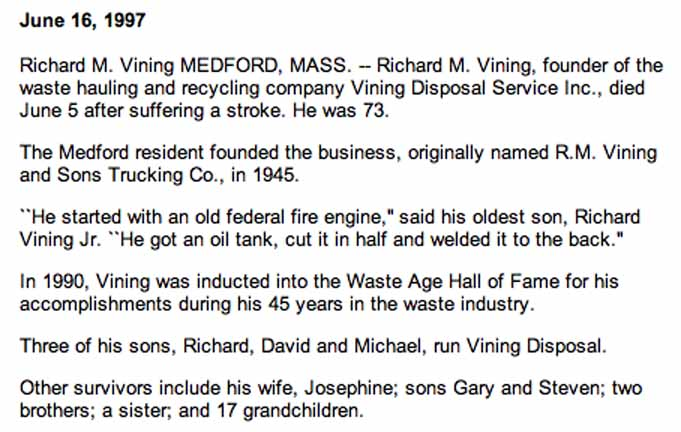
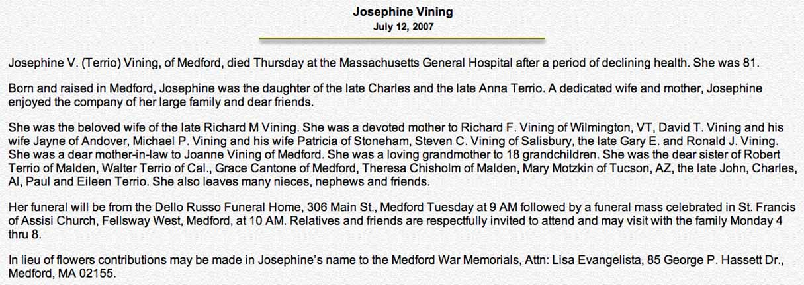
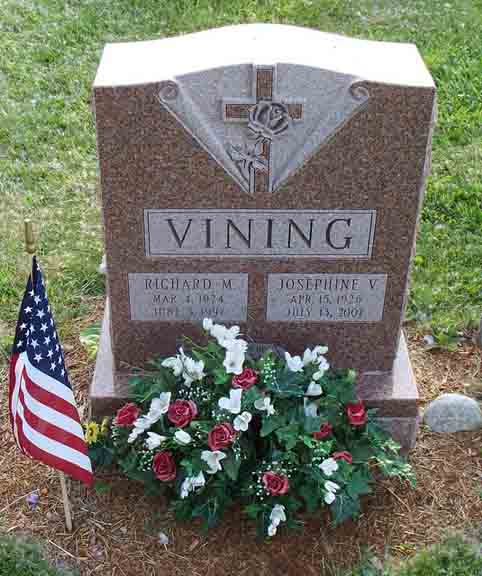
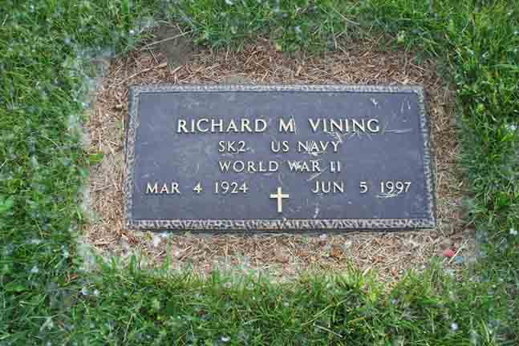
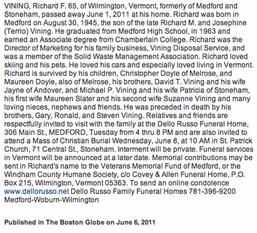

Documentation for Richard M. Vining - Josephine V. Terrio
Death Data
Obituaries for Richard M. Vining and Josephine V. (Terrio) Vining:


Headstone for Richard M. Vining and Josephine V. (Terrio) Vining, in Old Grove Cemetery, Medford, Middlesex County, Massachusetts (from Find A Grave):

Gravestone for Richard M. Vining, in Old Grove Cemetery, Medford, Middlesex County, Massachusetts (from Find A Grave):

Obituary for Richard F. Vining, son of Richard M. Vining and Josephine V. (Terrio) Vining:
